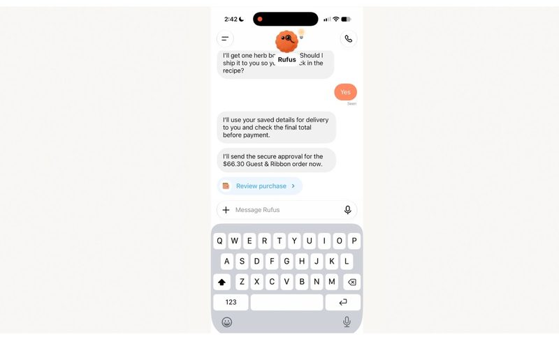
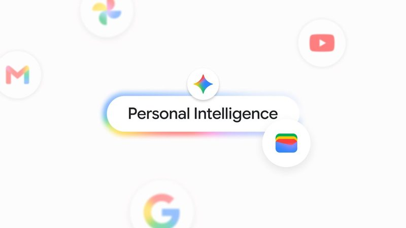
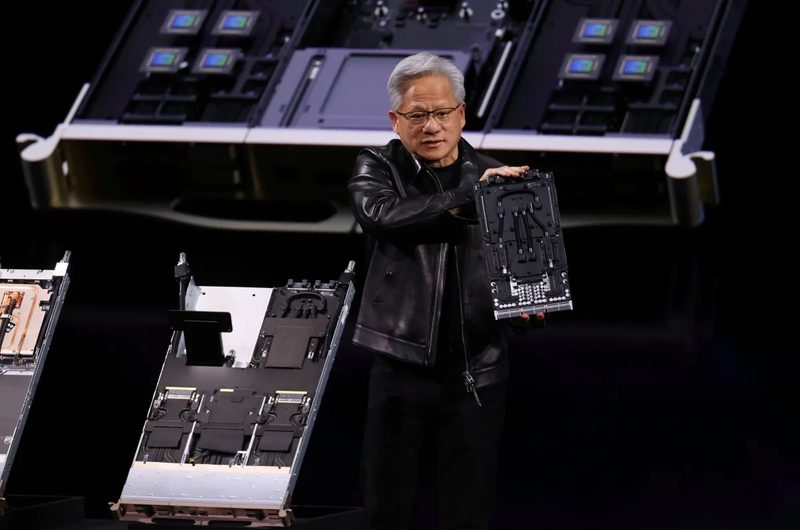
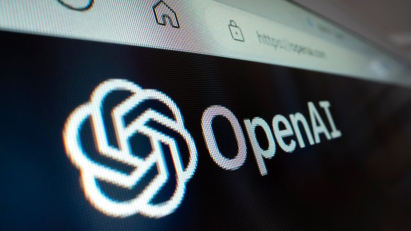
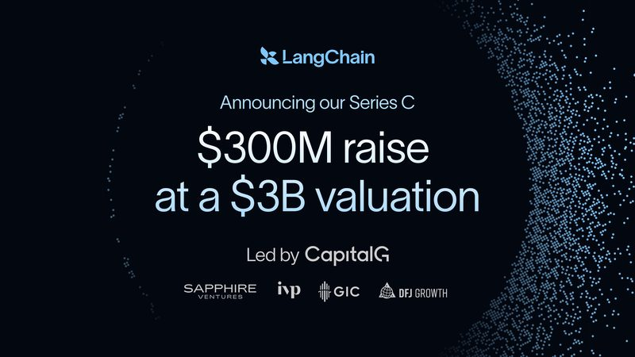

今日頭條
ChatGPT 推出 Wallet 代理付款 PLUS：Gemini 可連 Google Wallet 看花費
本期重點：OpenAI 推出 ChatGPT Wallet，讓 AI 代理在你按指紋或 Face ID 確認後代為結帳；Google 讓 Gemini 連上 Google Wallet，幫你整理花費與訂閱。另有研究指中國多個開源模型用禁運的 Nvidia Blackwell 晶片訓練、OpenAI 推出兩款 AI 資安工具、遊戲開發者使用生成式 AI 的比例上升，以及 LangChain 以 30 億美元估值募資。
📋 2026/11/14（六） 共 6 則 ChatGPT Wallet 上線，AI 代理可以幫你付款 Gemini 可以連 Google Wallet，幫你看花費與訂閱 研究指中國多個開源模型用禁運 Blackwell 晶片訓練 OpenAI 推出 Daybreak 資安工具，AI 代理找漏洞也寫修補 40% 遊戲開發者在工作中用生成式 AI LangChain 募資 3 億美元，估值 30 億美元 
圖：OpenAI 產品畫面，經 TechCrunch 新上線 #1 ChatGPT Wallet 上線，AI 代理可以幫你付款 OpenAI 於 11 月 13 日推出 ChatGPT Wallet，與 American Express、Mastercard、Visa 合作，讓 ChatGPT 的代理功能 dots 代替使用者完成購買。每筆消費前會列出商品、總額與要刷的卡，使用者要用 Face ID 或指紋確認，付款時用代替卡號的支付 token，商家與代理都拿不到真正卡號。
💡 跟你有什麼關係： 這代表「叫 AI 幫我買」開始從推薦走到實際結帳；卡片原本的回饋與爭議保障官方表示會保留，以後網購可能多一種下單方式。
⚠️ 初期只開放美國 18 歲以上 ChatGPT Pro 訂閱者、限美國發行的卡；官方也承認部分網站可能擋下代理購物。
📰 原始來源：OpenAI 官方（2026-11-13） ↗ 
圖：Google 工具 #2 Gemini 可以連 Google Wallet，幫你看花費與訂閱 Google 於 11 月 13 日宣布，美國所有 Gemini App 用戶都能把 Google Wallet 連進 Gemini，也可以透過 Plaid 連結信用卡與銀行帳戶。用戶可以請 Gemini 畫出花費圖表、找出還在扣款或漲價的訂閱、參考去年支出訂節慶預算；同時推出 Memory Summary，可以查看與修改 Gemini 記住的偏好。
💡 跟你有什麼關係： 很多人記帳最難的是找出忘記取消的訂閱，這類功能等於讓 AI 幫你翻帳單；Memory Summary 則讓你知道 AI 記了你哪些事。
⚠️ Wallet 連結目前只限美國；官方表示 Gemini 只能讀取帳戶資訊，不能轉帳或投資，連結可隨時關閉。
📰 原始來源：Google 官方部落格（2026-11-13） ↗ 
圖：Getty Images，經 TechCrunch 研究 #3 研究指中國多個開源模型用禁運 Blackwell 晶片訓練 前 OpenAI 研究員 Will DePue 主持的非營利團體 Unemployment Labs 於 11 月 12 日（美國時間）發表分析，從 DeepSeek、Moonshot（Kimi）、MiniMax、螞蟻集團公開的模型權重中，找到初始化時留下的 GPU 特徵，指出 DeepSeek V4、Kimi K3 等 6 個模型是在 Nvidia Blackwell 系統上建立。Blackwell 晶片目前禁止出口到中國。
💡 跟你有什麼關係： 美國晶片出口管制、Nvidia 前執行長風波與台灣供應鏈都綁在一起，這類證據可能讓管制再收緊，影響晶片股與相關產業。
⚠️ 研究者自己也說明，這只證明用過哪類硬體，無法證明晶片在哪裡、屬於誰，也不等於違法；例如可能是在海外資料中心租用算力。
📰 原始來源：TechCrunch（2026-11-13），引 Unemployment Labs 報告 ↗ 
圖：SecurityWeek 新上線 #4 OpenAI 推出 Daybreak 資安工具，AI 代理找漏洞也寫修補 OpenAI 於 11 月 12 日（美國時間）的資安活動上推出兩款產品：Daybreak Red Team 用多個 AI 代理對企業網站做滲透測試，Daybreak Defense Factory 則掃描程式碼、追查漏洞並準備修補程式。總裁 Greg Brockman 表示，企業的安全程度將取決於它用來防禦的前沿模型。
💡 跟你有什麼關係： 你常用的網站與 App 背後的公司，開始用 AI 大量找漏洞與修補，若做得好，個資外洩的機會可望降低。
⚠️ Red Team 目前是申請制搶先體驗；Defense Factory 為預覽版，修補程式要工程師審核後才上線，不會自動部署。
📰 原始來源：The Register（2026-11-12） ↗ 圖：GDC Festival of Gaming，經 The Verge 數字 #5 40% 遊戲開發者在工作中用生成式 AI GDC Festival of Gaming 於 11 月 12 日公布年度產業調查，40% 受訪遊戲開發者表示工作中會使用生成式 AI，高於 2025 年的 36%；免費遊戲開發者為 58%，純手機遊戲工作室達 70%。用途以研究與發想（73%）最多，用在最終遊戲美術的只有 8%。
💡 跟你有什麼關係： 你玩的遊戲有越來越多環節有 AI 參與，但目前多半用在找資料、寫程式，直接做成畫面的還不多。
⚠️ 同一份調查也有 34% 受訪者表示過去兩年曾被裁員；數字來自問卷自填。
📰 原始來源：The Verge（2026-11-12），報導 GDC 年度調查 ↗ 
圖：LangChain 資金 #6 LangChain 募資 3 億美元，估值 30 億美元 AI 代理開發平台 LangChain 於 11 月 13 日宣布完成 3 億美元 C 輪募資，估值 30 億美元，由 CapitalG 領投，GIC、DFJ Growth、IVP、Sapphire Ventures 等參與。官方表示超過 7,000 個組織使用旗下 LangSmith 平台，包括 NVIDIA、Toyota、Salesforce。
💡 跟你有什麼關係： 企業內部的客服、助理等 AI 代理，很多是用這類工具打造與監控，資金湧入代表企業導入 AI 代理的速度還在加快。
⚠️ TechCrunch 報導，估值是約一年前 12.5 億美元的兩倍多。
📰 原始來源：LangChain 官方（2026-11-13） ↗ ✅ 2026/11/14（六） 可以做： 如果有在用 AI 助理管理帳務，先到設定裡看它目前連了哪些 App、記住了哪些資料，不需要的就關掉。
🗂️ 過去 14 天